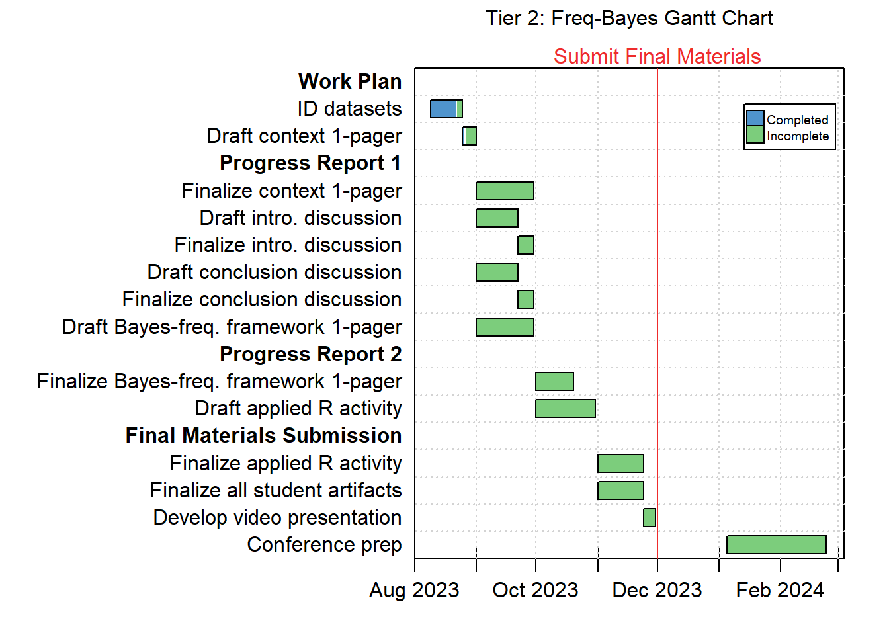

Tier 2 Work Plan
Stefani Langehennig & Zach del Rosario
This document defines our work plan for Tier 2 of the Bayes BATS program. We describe the specific student-facing artifacts to be designed, a timeline for the proposed work, and details on meeting times among relevant parties (Stefani, Zach, and the BATS co-PIs).
Proposed Student Artifacts
The table below illustrates the student artifacts we will create. Each artifact has a description of what it is, followed by the 5E instructional model phase in which the artifact falls. The table also contains the approximate time allotted for each activity, as well as the milestone by which the artifact needs to be completed.
The following abbreviations indicate milestones in the work plan:
- WP = Work Plan
- PR1 = Progress Report 1
- PR2 = Progress Report 2
- FMS = Final Materials Submission
| Key | Artifact | Description | 5E Model Phase | Time Allotted | Milestone |
|---|---|---|---|---|---|
| 1 | Dataset | Common dataset to be used across activities. Provided in .csv format. | Explore | 2.5 weeks | WP |
| 2 | Context one-pager | Document describing dataset, research questions. In .qmd format. | Explore | 3 weeks | PR1 |
| 3 | Introductory discussion activity | Discussion questions to gauge familiarity/interest in Bayesian framework. In .qmd format. | Engage | 4 weeks | PR1 |
| 4 | Closing discussion activity | Discussion questions to gauge impressions/understanding on differences between two frameworks. In .qmd format. | Evaluate | 4 weeks | PR1 |
| 5 | Bayesian + frequentist one-pager | Document facilitating conceptual understanding/comparison of Bayesian + frequentist frameworks. In .qmd format. | Explain | 7 weeks | PR2 |
| 6 | Interactive applied activity in R | Scaffolded set of activities, including: EDA, initial modelling, diagnostics, predictions, recommendations. In .qmd format. | Elaborate | 9 weeks | FMS |
Dataset Constraints and Objectives
The dataset used in analysis is crucial to the success of the proposed activity; therefore, we provide additional details on our constraints and objectives for the dataset. Our intent is to give the BATS co-PIs visibility into our process, in the event that they know of relevant datasets we may use. We have done some initial digging into potential datasets, but have not yet finalized this choice.
Primary constraint: Supports differential conclusions
The primary constraint for the activity dataset is that it can be used to demonstrate different analysis outcomes under Frequentist vs. Bayesian approaches. While one could conceivably “engineer” this outcome for many datasets, our hope is that this differential seems authentic to students. A credible difference in analysis outcomes will best illustrate the importance of analytic assumptions—our key learning objective.
Additional objectives
In addition to the “differential conclusion” constraint, we hope that the analysis dataset will be motivating and interesting to a wide variety of students. Stefani teaches business students, while Zach teaches engineers. It will be tricky to find a dataset that is legible and interesting to both audiences. Data from topics with general interest (e.g., U.S. income) or both a business and technology angle (e.g., electric vehicle charging) may be promising.
Proposed Timeline
The Gantt chart visually represents each of the tasks needed to complete the proposed artifacts, alongside the milestone it falls under (WP, PR1, PR2, and FMS). While not shown in the table above, we have also incorporated time into our Gantt chart to account for conference preparation should we be accepted into Tier 3 of the Bayes BATS program.
Meeting Times
The proposed timeline does not currently showcase meeting times for the activity-creating team, nor does it show other meetings that will occur (such as office hours and mentor meetings). We envision the following cadence for recurring meetings:
- Weekly and/or bi-weekly meetings for the activity-creating team
- Monthly meetings with mentor (Mine)
- Office hours
- 07 September 2023 with Monika (10-11a EST)
- 15 September 2023 with Mine (1130a-1230p EST)
- 22 September 2023 with Amy (130-230p EST)
- October and November (TBD)